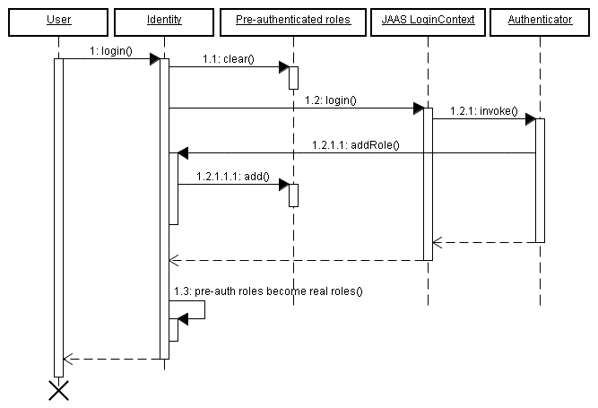
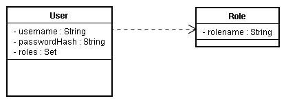
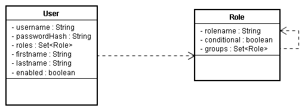
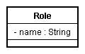
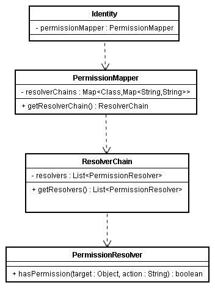
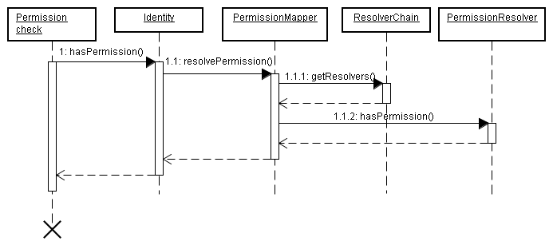

Chapter 15. Security
15.1. Overview
The Seam Security API provides a multitude of security-related features for your Seam-based application, including:
- Authentication — an extensible, Java Authentication and Authorization Service (JAAS) based authentication layer that allows users to authenticate against any security provider.
- Identity Management — an API for managing the users and roles of a Seam application at runtime.
- Authorization — an extremely comprehensive authorization framework, supporting user roles, persistent and rule-based permissions, and a pluggable permission-resolver that makes it easy to implement customized security logic.
- Permission Management — a set of built-in Seam components that make it easy to manage an application's security policy.
- CAPTCHA support — to assist in the prevention of automated software/scripts abusing your Seam-based site.
This chapter covers each of these features in detail.
15.2. Disabling Security
In some situations, you may need to disable Seam Security (during unit tests, for instance, or to use a different security approach, like native JAAS). To disable the security infrastructure, call the static method
Identity.setSecurityEnabled(false). However, when you want to configure the application, a more convenient alternative is to control the following settings in components.xml:
- Entity Security
- Hibernate Security Interceptor
- Seam Security Interceptor
- Page restrictions
- Servlet API security integration
This chapter documents the vast number of options available when establishing the user's identity (authentication) and establishing access constraints (authorization). We will begin with the foundation of the security model: authentication.
15.3. Authentication
Seam Security provides Java Authentication and Authorization Service (JAAS) based authorization features, providing a robust and highly configurable API for handling user authentication. If your authentication needs are not this complex, Seam also offers a simplified authentication method.
15.3.1. Configuring an Authenticator component
Note
If you use Seam's Identity Management features, you can skip this section — it is not necessary to create an authenticator component.
Seam's simplified authentication method uses a built-in JAAS login module (
SeamLoginModule) to delegate authentication to one of your own Seam components. (This module requires no additional configuration files, and comes pre-configured within Seam.) With this, you can write an authentication method with the entity classes provided by your own application, or authenticate through another third-party provider. Configuring this simplified authentication requires the identity component to be configured in components.xml
<components xmlns="http://jboss.com/products/seam/components" xmlns:core="http://jboss.com/products/seam/core" xmlns:security="http://jboss.com/products/seam/security" xmlns:xsi="http://www.w3.org/2001/XMLSchema-instance" xsi:schemaLocation= "http://jboss.com/products/seam/components http://jboss.com/products/seam/components-2.2.xsd http://jboss.com/products/seam/security http://jboss.com/products/seam/security-2.2.xsd"> <security:identity authenticate-method="#{authenticator.authenticate}"/> </components>
#{authenticator.authenticate} is a method binding that indicates the authenticate method of the authenticator component will be used to authenticate the user.
15.3.2. Writing an authentication method
The
authenticate-method property specified for identity in components.xml specifies the method used by SeamLoginModule to authenticate users. This method takes no parameters, and is expected to return a Boolean indicating authentication success or failure. Username and password are obtained from Credentials.getUsername() and Credentials.getPassword() respectively. (A reference to the credentials component can be obtained via Identity.instance().getCredentials().) Any role that the user is a member of should be assigned with Identity.addRole(). The following is a complete example of an authentication method inside a POJO component:
@Name("authenticator") public class Authenticator { @In EntityManager entityManager; @In Credentials credentials; @In Identity identity; public boolean authenticate() { try { User user = (User) entityManager.createQuery( "from User where username = :username and password = :password") .setParameter("username", credentials.getUsername()) .setParameter("password", credentials.getPassword()) .getSingleResult(); if (user.getRoles() != null) { for (UserRole mr : user.getRoles()) identity.addRole(mr.getName()); } return true; } catch (NoResultException ex) { return false; } } }
In the example, both
User and UserRole are application-specific entity beans. The roles parameter is populated with roles that the user is a member of. This is added to the Set as literal string values — for example, "admin", "user", etc. If the user record is not found, and a NoResultException is thrown, the authentication method returns false to indicate authentication failure.
Note
It is important to keep authenticator methods minimal and free from any side-effects — they can be invoked multiple times during a single request, so any special code that should execute when authentication succeeds or fails should implement an event observer. See Section 15.10, “Security Events” later in this chapter for more information about events raised by Seam Security.
15.3.2.1. Identity.addRole()
The
Identity.addRole() method's behavior depends upon current session authentication. If the session is not authenticated, addRole() should only be called during the authentication process. When called here, the role name is placed in a temporary list of pre-authenticated roles. Once authentication succeeds, the pre-authenticated roles then become "real" roles, and calling Identity.hasRole() for those roles returns true. The following sequence diagram represents the list of pre-authenticated roles as a first class object to clarify its position in the authentication process.

If the current session is already authenticated, then calling
Identity.addRole() grants the specified role to the current user immediately.
15.3.2.2. Writing an event observer for security-related events
If, upon successful log in, some user statistics require updates, you can write an event observer for the
org.jboss.seam.security.loginSuccessful event, like this:
@In UserStats userStats; @Observer("org.jboss.seam.security.loginSuccessful") public void updateUserStats() { userStats.setLastLoginDate(new Date()); userStats.incrementLoginCount(); }
This observer method can be placed anywhere, even in the Authenticator component itself. More information about other security-related events appears later in the chapter.
15.3.3. Writing a login form
The
credentials component provides both username and password properties, catering for the most common authentication scenario. These properties can be bound directly to the username and password fields on a login form. Once these properties are set, calling identity.login() authenticates the user with the credentials provided. An example of a simple login form is as follows:
<div> <h:outputLabel for="name" value="Username"/> <h:inputText id="name" value="#{credentials.username}"/> </div> <div> <h:outputLabel for="password" value="Password"/> <h:inputSecret id="password" value="#{credentials.password}"/> </div> <div> <h:commandButton value="Login" action="#{identity.login}"/> </div>
Similarly, the user is logged out by calling
#{identity.logout}. This action clears the security state of the currently authenticated user and invalidate the user's session.
15.3.4. Configuration Summary
There are three easy steps to configure authentication:
- Configure an authentication method in
components.xml. - Write an authentication method.
- Write a login form so that the user can authenticate.
15.3.5. Remember Me
Seam Security supports two different modes of the Remember Me functionality common to many web-based applications. The first mode allows the username to be stored in the user's browser as a cookie, and leaves the browser to remember the password. The second mode stores a unique token in a cookie, and lets a user authenticate automatically when they return to the site, without having to provide a password.
Warning
Although it is convenient for users, automatic client authentication through a persistent cookie on the client machine is dangerous because the effects of any cross-site scripting (XSS) security hole are magnified. Without the authentication cookie, the only cookie an attacker can steal with XSS is the user's current session cookie — so an attack can only occur while a user has a session open. If a persistent Remember Me cookie is stolen, an attacker can log in without authentication at any time. If you wish to use automatic client authentication, it is vital to protect your website against XSS attacks.
Browser vendors introduced the Remember Passwords feature to combat this issue. Here, the browser remembers the username and password used to log in to a particular website and domain, and automatically fills in the login form when there is no session active. A log in keyboard shortcut on your website can make the log in process almost as convenient as the "Remember Me" cookie, and much safer. Some browsers (for example, Safari on OS X) store the login form data in the encrypted global operation system keychain. In a networked environment, the keychain can be transported with the user between laptop and desktop — cookies are not usually synchronized.
Although persistent Remember Me cookies with automatic authentication are widely used, they are bad security practice. Cookies that recall only the user's login name, and fill out the login form with that username as a convenience, are much more secure.
No special configuration is required to enable the Remember Me feature for the default (safe, username-only) mode. In your login form, simply bind the Remember Me checkbox to
rememberMe.enabled, as seen in the following example:
<div> <h:outputLabel for="name" value="User name"/> <h:inputText id="name" value="#{credentials.username}"/> </div> <div> <h:outputLabel for="password" value="Password"/> <h:inputSecret id="password" value="#{credentials.password}" redisplay="true"/> </div> <div class="loginRow"> <h:outputLabel for="rememberMe" value="Remember me"/> <h:selectBooleanCheckbox id="rememberMe" value="#{rememberMe.enabled}"/> </div>
15.3.5.1. Token-based Remember Me Authentication
To use the automatic, token-based mode of the Remember Me feature, you must first configure a token store. These authentication tokens are commonly stored within a database. Seam supports this method, but you can also implement your own token store by using the
org.jboss.seam.security.TokenStore interface. This section assumes that you will be using the provided JpaTokenStore implementation to store authentication tokens inside a database table.
First, create a new Entity to hold the tokens. The following is one possible structure:
@Entity public class AuthenticationToken implements Serializable { private Integer tokenId; private String username; private String value; @Id @GeneratedValue public Integer getTokenId() { return tokenId; } public void setTokenId(Integer tokenId) { this.tokenId = tokenId; } @TokenUsername public String getUsername() { return username; } public void setUsername(String username) { this.username = username; } @TokenValue public String getValue() { return value; } public void setValue(String value) { this.value = value; } }
Several special annotations,
@TokenUsername and @TokenValue, are used to configure the username and token properties of the entity. These annotations are required for the entity that holds the authentication tokens.
The next step is to configure
JpaTokenStore to store and retrieve authentication tokens with this entity bean. Do this by specifying the token-class attribute in components.xml:
<security:jpa-token-store token-class="org.jboss.seam.example.seamspace.AuthenticationToken"/>
The final step is to configure the
RememberMe component in components.xml. Its mode should be set to autoLogin:
<security:remember-me mode="autoLogin"/>
Users who check the Remember Me checkbox will now be authenticated automatically.
To ensure that users are automatically authenticated when returning to the site, the following section should be placed in
components.xml:
<event type="org.jboss.seam.security.notLoggedIn"> <action execute="#{redirect.captureCurrentView}"/> <action execute="#{identity.tryLogin()}"/> </event> <event type="org.jboss.seam.security.loginSuccessful"> <action execute="#{redirect.returnToCapturedView}"/> </event>
15.3.6. Handling Security Exceptions
So that users do not receive a basic default error page when a security error occurs, you should edit
pages.xml to redirect users to a more attractive page. The two main exceptions thrown by the security API are:
NotLoggedInException— This exception is thrown when the user attempts to access a restricted action or page when they are not logged in.AuthorizationException— This exception is only thrown if the user is already logged in, and they have attempted to access a restricted action or page for which they do not have the necessary privileges.
In the case of a
NotLoggedInException, we recommend the user be redirected to a login or registration page so that they can log in. For an AuthorizationException, it may be useful to redirect the user to an error page. Here's an example of a pages.xml file that redirects both of these security exceptions:
<pages> ... <exception class="org.jboss.seam.security.NotLoggedInException"> <redirect view-id="/login.xhtml"> <message>You must be logged in to perform this action</message> </redirect> </exception> <exception class="org.jboss.seam.security.AuthorizationException"> <end-conversation/> <redirect view-id="/security_error.xhtml"> <message> You do not have the necessary security privileges to perform this action. </message> </redirect> </exception> </pages>
Most web applications require more sophisticated handling of login redirection. Seam includes some special functionality, outlined in the following section.
15.3.7. Login Redirection
When an unauthenticated user tries to access a particular view or wildcarded view ID, you can have Seam redirect the user to a login screen as follows:
<pages login-view-id="/login.xhtml"> <page view-id="/members/*" login-required="true"/> ... </pages>
Note
This is more refined than the exception handler shown above, but should probably be used in conjunction with it.
After the user logs in, we want to automatically redirect them to the action that required log in. If you add the following event listeners to
components.xml, attempts to access a restricted view while not logged in are remembered. Upon a successful log in, the user is redirected to the originally requested view, with any page parameters that existed in the original request.
<event type="org.jboss.seam.security.notLoggedIn"> <action execute="#{redirect.captureCurrentView}"/> </event> <event type="org.jboss.seam.security.postAuthenticate"> <action execute="#{redirect.returnToCapturedView}"/> </event>
Note
Login redirection is implemented as a conversation-scoped mechanism, so do not end the conversation in your
authenticate() method.
15.3.8. HTTP Authentication
Although we do not recommend it unless absolutely necessary, Seam provides the means to authenticate with either HTTP Basic or HTTP Digest (RFC 2617) methods. For either form, you must first enable the
authentication-filter component in components.xml:
<web:authentication-filter url-pattern="*.seam" auth-type="basic"/>
To enable basic authentication, set
auth-type to basic. For digest authentication, set it to digest. If you want to use digest authentication, you must also set the key and realm:
<web:authentication-filter url-pattern="*.seam" auth-type="digest" key="AA3JK34aSDlkj" realm="My App"/>
The
key can be any String value. The realm is the name of the authentication realm that is presented to the user when they authenticate.
15.3.8.1. Writing a Digest Authenticator
If using digest authentication, your authenticator class should extend the abstract class
org.jboss.seam.security.digest.DigestAuthenticator, and use the validatePassword() method to validate the user's plain text password against the digest request. Here is an example:
public boolean authenticate() { try { User user = (User) entityManager.createQuery( "from User where username = "username") .setParameter("username", identity.getUsername()) .getSingleResult(); return validatePassword(user.getPassword()); } catch (NoResultException ex) { return false; } }
15.3.9. Advanced Authentication Features
This section explores some of the advanced features provided by the security API for addressing more complex security requirements.
15.3.9.1. Using your container's JAAS configuration
If you prefer not to use the simplified JAAS configuration provided by the Seam Security API, you can use the default system JAAS configuration by adding a
jaas-config-name property to components.xml. For example, if you use JBoss Enterprise Application Platform and want to use the other policy (which uses the UsersRolesLoginModule login module provided by JBoss Enterprise Application Platform), then the entry in components.xml would look like this:
<security:identity jaas-config-name="other"/>
Keep in mind that doing this does not mean that your user will be authenticated in your Seam application container — it instructs Seam Security to authenticate itself with the configured JAAS security policy.
15.4. Identity Management
Identity Management provides a standard API for managing a Seam application's users and roles, regardless of the identity store (database, LDAP, etc.) used in back-end operations. The
identityManager component is at the core of the Identity Management API, and provides all methods for creating, modifying, and deleting users, granting and revoking roles, changing passwords, enabling and disabling user accounts, authenticating users, and listing users and roles.
Before use, the
identityManager must be configured with at least one IdentityStore. These components interact with the back-end security provider.
15.4.1. Configuring IdentityManager
The
identityManager component allows you to configure separate identity stores for authentication and authorization. This means that users can be authenticated against one identity store (for example, an LDAP directory), but have their roles loaded from another identity store (such as a relational database).
Seam provides two
IdentityStore implementations out of the box. The default, JpaIdentityStore, uses a relational database to store user and role information. The other implementation is LdapIdentityStore, which uses an LDAP directory to store users and roles.
The
identityManager component has two configurable properties: identityStore and roleIndentityStore. The value for these properties must be an EL expression that refers to a Seam component with the IdentityStore interface. If left unconfigured, the default (JpaIdentityStore) will be used. If only the identityStore property is configured, the same value will be used for roleIdentityStore. For example, the following entry in components.xml will configure identityManager to use an LdapIdentityStore for both user-related and role-related operations:
<security:identity-manager identity-store="#{ldapIdentityStore}"/>
The following example configures
identityManager to use an LdapIdentityStore for user-related operations, and JpaIdentityStore for role-related operations:
<security:identity-manager identity-store="#{ldapIdentityStore}" role-identity-store="#{jpaIdentityStore}"/>
The following sections explain each identity storage method in greater detail.
15.4.2. JpaIdentityStore
This method stores users and roles in a relational database. It is designed to allow flexible database design and table structure. A set of special annotations lets entity beans store user and role records.
15.4.2.1. Configuring JpaIdentityStore
Both
user-class and role-class must be configured before JpaIdentityStore can be used. These properties refer to the entity classes used to store user and role records, respectively. The following example shows the components.xml file from the SeamSpace example:
<security:jpa-identity-store user-class="org.jboss.seam.example.seamspace.MemberAccount" role-class="org.jboss.seam.example.seamspace.MemberRole"/>
15.4.2.2. Configuring the Entities
The following table describes the special annotations used to configure entity beans for user and role storage.
Table 15.1. User Entity Annotations
|
Annotation
|
Status
|
Description
|
|---|---|---|
@UserPrincipal
|
Required
|
This annotation marks the field or method containing the user's username.
|
@UserPassword
|
Required
|
This annotation marks the field or method containing the user's password. It allows a
hash algorithm to be specified for password hashing. Possible values for hash are md5, sha and none. For example:
@UserPassword(hash = "md5") public String getPasswordHash() { return passwordHash; }
It is possible to extend the
PasswordHash component to implement other hashing algorithms, if required.
|
@UserFirstName
|
Optional
|
This annotation marks the field or method containing the user's first name.
|
@UserLastName
|
Optional
|
This annotation marks the field or method containing the user's last name.
|
@UserEnabled
|
Optional
|
This annotation marks the field or method containing the enabled user status. This should be a Boolean property. If not present, all user accounts are assumed to be enabled.
|
@UserRoles
|
Required
|
This annotation marks the field or method containing the roles of the user. This property will be described in more detail in a later section.
|
Table 15.2. Role Entity Annotations
|
Annotation
|
Status
|
Description
|
|---|---|---|
@RoleName
|
Required
|
This annotation marks the field or method containing the name of the role.
|
@RoleGroups
|
Optional
|
This annotation marks the field or method containing the group memberships of the role.
|
@RoleConditional
|
Optional
|
This annotation marks the field or method that indicates whether a role is conditional. Conditional roles are explained later in this chapter.
|
15.4.2.3. Entity Bean Examples
As mentioned previously,
JpaIdentityStore is designed to be as flexible as possible when it comes to the database schema design of your user and role tables. This section looks at a number of possible database schemas that can be used to store user and role records.
15.4.2.3.1. Minimal schema example
Here, a simple user and role table are linked via a many-to-many relationship using a cross-reference table named
UserRoles.

@Entity public class User { private Integer userId; private String username; private String passwordHash; private Set<Role> roles; @Id @GeneratedValue public Integer getUserId() { return userId; } public void setUserId(Integer userId) { this.userId = userId; } @UserPrincipal public String getUsername() { return username; } public void setUsername(String username) { this.username = username; } @UserPassword(hash = "md5") public String getPasswordHash() { return passwordHash; } public void setPasswordHash(String passwordHash) { this.passwordHash = passwordHash; } @UserRoles @ManyToMany(targetEntity = Role.class) @JoinTable(name = "UserRoles", joinColumns = @JoinColumn(name = "UserId"), inverseJoinColumns = @JoinColumn(name = "RoleId")) public Set<Role> getRoles() { return roles; } public void setRoles(Set<Role> roles) { this.roles = roles; } }
@Entity public class Role { private Integer roleId; private String rolename; @Id @Generated public Integer getRoleId() { return roleId; } public void setRoleId(Integer roleId) { this.roleId = roleId; } @RoleName public String getRolename() { return rolename; } public void setRolename(String rolename) { this.rolename = rolename; } }
15.4.2.3.2. Complex Schema Example
This example builds on the previous minimal example by including all optional fields, and allowing group memberships for roles.

@Entity public class User { private Integer userId; private String username; private String passwordHash; private Set<Role> roles; private String firstname; private String lastname; private boolean enabled; @Id @GeneratedValue public Integer getUserId() { return userId; } public void setUserId(Integer userId) { this.userId = userId; } @UserPrincipal public String getUsername() { return username; } public void setUsername(String username) { this.username = username; } @UserPassword(hash = "md5") public String getPasswordHash() { return passwordHash; } public void setPasswordHash(String passwordHash) { this.passwordHash = passwordHash; } @UserFirstName public String getFirstname() { return firstname; } public void setFirstname(String firstname) { this.firstname = firstname; } @UserLastName public String getLastname() { return lastname; } public void setLastname(String lastname) { this.lastname = lastname; } @UserEnabled public boolean isEnabled() { return enabled; } public void setEnabled(boolean enabled) { this.enabled = enabled; } @UserRoles @ManyToMany(targetEntity = Role.class) @JoinTable(name = "UserRoles", joinColumns = @JoinColumn(name = "UserId"), inverseJoinColumns = @JoinColumn(name = "RoleId")) public Set<Role> getRoles() { return roles; } public void setRoles(Set<Role> roles) { this.roles = roles; } }
@Entity public class Role { private Integer roleId; private String rolename; private boolean conditional; @Id @Generated public Integer getRoleId() { return roleId; } public void setRoleId(Integer roleId) { this.roleId = roleId; } @RoleName public String getRolename() { return rolename; } public void setRolename(String rolename) { this.rolename = rolename; } @RoleConditional public boolean isConditional() { return conditional; } public void setConditional(boolean conditional) { this.conditional = conditional; } @RoleGroups @ManyToMany(targetEntity = Role.class) @JoinTable(name = "RoleGroups", joinColumns = @JoinColumn(name = "RoleId"), inverseJoinColumns = @JoinColumn(name = "GroupId")) public Set<Role> getGroups() { return groups; } public void setGroups(Set<Role> groups) { this.groups = groups; } }
15.4.2.4. JpaIdentityStore Events
When using
JpaIdentityStore with IdentityManager, several events are raised when certain IdentityManager methods are invoked.
15.4.2.4.1. JpaIdentityStore.EVENT_PRE_PERSIST_USER
This event is raised in response to calling
IdentityManager.createUser(). Just before the user entity is persisted to the database, this event is raised to pass the entity instance as an event parameter. The entity will be an instance of the user-class configured for JpaIdentityStore.
An observer can be useful, here, for setting entity field values that are not part of standard
createUser() functionality.
15.4.2.4.2. JpaIdentityStore.EVENT_USER_CREATED
This event is also raised in response to calling
IdentityManager.createUser(). However, it is raised after the user entity has already been persisted to the database. Like the EVENT_PRE_PERSIST_USER event, it also passes the entity instance as an event parameter. It may be useful to observe this event if you need to persist other entities that reference the user entity, such as contact detail records or other user-specific data.
15.4.2.4.3. JpaIdentityStore.EVENT_USER_AUTHENTICATED
This event is raised when calling
IdentityManager.authenticate(). It passes the user entity instance as the event parameter, and is useful for reading additional properties from the user entity being authenticated.
15.4.3. LdapIdentityStore
This identity storage method is designed to work with user records stored in an LDAP directory. It is highly configurable, and allows very flexible directory storage of both users and roles. The following sections describe the configuration options for this identity store, and provide some configuration examples.
15.4.3.1. Configuring LdapIdentityStore
The following table describes the properties that can be configured in
components.xml for LdapIdentityStore.
Table 15.3. LdapIdentityStore Configuration Properties
|
Property
|
Default Value
|
Description
|
|---|---|---|
server-address
| localhost
|
The address of the LDAP server.
|
server-port
| 389
|
The port number that the LDAP server listens on.
|
user-context-DN
| ou=Person,dc=acme,dc=com
|
The Distinguished Name (DN) of the context containing user records.
|
user-DN-prefix
| uid=
|
This value is prefixed to the front of the username to locate the user's record.
|
user-DN-suffix
| ,ou=Person,dc=acme,dc=com
|
This value is appended to the end of the username to locate the user's record.
|
role-context-DN
| ou=Role,dc=acme,dc=com
|
The DN of the context containing role records.
|
role-DN-prefix
| cn=
|
This value is prefixed to the front of the role name to form the DN that locates the role record.
|
role-DN-suffix
| ,ou=Roles,dc=acme,dc=com
|
This value is appended to the role name to form the DN that locates the role record.
|
bind-DN
| cn=Manager,dc=acme,dc=com
|
This is the context used to bind to the LDAP server.
|
bind-credentials
| secret
|
These are the credentials (the password) used to bind to the LDAP server.
|
user-role-attribute
| roles
|
The attribute name of the user record containing the list of roles that the user is a member of.
|
role-attribute-is-DN
| true
|
This Boolean property indicates whether the role attribute of the user record is itself a distinguished name.
|
user-name-attribute
| uid
|
Indicates the user record attribute containing the username.
|
user-password-attribute
| userPassword
|
Indicates the user record attribute containing the user's password.
|
first-name-attribute
| null
|
Indicates the user record attribute containing the user's first name.
|
last-name-attribute
| sn
|
Indicates the user record attribute containing the user's last name.
|
full-name-attribute
| cn
|
Indicates the user record attribute containing the user's full (common) name.
|
enabled-attribute
| null
|
Indicates the user record attribute that determines whether the user is enabled.
|
role-name-attribute
| cn
|
Indicates the role record attribute containing the name of the role.
|
object-class-attribute
| objectClass
|
Indicates the attribute that determines the class of an object in the directory.
|
role-object-classes
| organizationalRole
|
An array of the object classes that new role records should be created as.
|
user-object-classes
| person,uidObject
|
An array of the object classes that new user records should be created as.
|
15.4.3.2. LdapIdentityStore Configuration Example
The following configuration example shows how
LdapIdentityStore can be configured for an LDAP directory running on fictional host directory.mycompany.com. The users are stored within this directory under the ou=Person,dc=mycompany,dc=com context, and are identified by the uid attribute (which corresponds to their username). Roles are stored in their own context, ou=Roles,dc=mycompany,dc=com, and are referenced from the user's entry via the roles attribute. Role entries are identified by their common name (the cn attribute), which corresponds to the role name. In this example, users can be disabled by setting the value of their enabled attribute to false.
<security:ldap-identity-store server-address="directory.mycompany.com" bind-DN="cn=Manager,dc=mycompany,dc=com" bind-credentials="secret" user-DN-prefix="uid=" user-DN-suffix=",ou=Person,dc=mycompany,dc=com" role-DN-prefix="cn=" role-DN-suffix=",ou=Roles,dc=mycompany,dc=com" user-context-DN="ou=Person,dc=mycompany,dc=com" role-context-DN="ou=Roles,dc=mycompany,dc=com" user-role-attribute="roles" role-name-attribute="cn" user-object-classes="person,uidObject" enabled-attribute="enabled" />
15.4.4. Writing your own IdentityStore
Writing your own identity store implementation allows you to authenticate and perform identity management operations against security providers that are not supported out of the box by Seam. You only need a single class that implements the
org.jboss.seam.security.management.IdentityStore interface to achieve this.
Refer to the JavaDoc about
IdentityStore for a description of the methods that must be implemented.
15.4.5. Authentication with Identity Management
If you use Identity Management features in your Seam application, then you do not need to provide an authenticator component (see previous Authentication section) to enable authentication. Simply omit the
authenticator-method from the identity configuration in components.xml, and the SeamLoginModule will use IdentityManager to authenticate your application's users without any special configuration.
15.4.6. Using IdentityManager
Access the
IdentityManager either by injecting it into your Seam component, like so:
@In IdentityManager identityManager;
or, through its static
instance() method:
IdentityManager identityManager = IdentityManager.instance();
The following table describes
IdentityManager's API methods:
Table 15.4. Identity Management API
|
Method
|
Returns
|
Description
|
|---|---|---|
createUser(String name, String password)
| boolean
|
Creates a new user account, with the specified name and password. Returns
true if successful; otherwise, returns false.
|
deleteUser(String name)
| boolean
|
Deletes the user account with the specified name. Returns
true if successful; otherwise, returns false.
|
createRole(String role)
| boolean
|
Creates a new role, with the specified name. Returns
true if successful; otherwise, returns false.
|
deleteRole(String name)
| boolean
|
Deletes the role with the specified name. Returns
true if successful; otherwise, returns false.
|
enableUser(String name)
| boolean
|
Enables the user account with the specified name. Accounts that are not enabled cannot authenticate. Returns
true if successful; otherwise, returns false.
|
disableUser(String name)
| boolean
|
Disables the user account with the specified name. Returns
true if successful; otherwise, returns false.
|
changePassword(String name, String password)
| boolean
|
Changes the password for the user account with the specified name. Returns
true if successful; otherwise, returns false.
|
isUserEnabled(String name)
| boolean
|
Returns
true if the specified user account is enabled; otherwise, returns false.
|
grantRole(String name, String role)
| boolean
|
Grants the specified role to the specified user or role. The role must already exist for it to be granted. Returns
true if the role is successfully granted, or false if the user has already been granted the role.
|
revokeRole(String name, String role)
| boolean
|
Revokes the specified role from the specified user or role. Returns
true if the specified user is a member of the role and it is successfully revoked, or false if the user is not a member of the role.
|
userExists(String name)
| boolean
|
Returns
true if the specified user exists, or false if it does not.
|
listUsers()
| List
|
Returns a list of all user names, sorted in alpha-numeric order.
|
listUsers(String filter)
| List
|
Returns a list of all user names filtered by the specified filter parameter, sorted in alpha-numeric order.
|
listRoles()
| List
|
Returns a list of all role names.
|
getGrantedRoles(String name)
| List
|
Returns a list of all roles explicitly granted to the specified user name.
|
getImpliedRoles(String name)
| List
|
Returns a list of all roles implicitly granted to the specified user name. Implicitly granted roles include those that are granted to the roles that the user is a member of, rather than granted directly to the user. For example, if the
admin role is a member of the user role, and a user is a member of the admin role, then the implied roles for the user are both the admin, and user roles.
|
authenticate(String name, String password)
| boolean
|
Authenticates the specified username and password using the configured Identity Store. Returns
true if successful or false if authentication failed. Successful authentication implies nothing beyond the return value of the method. It does not change the state of the Identity component - to perform a proper Seam log in the Identity.login() must be used instead.
|
addRoleToGroup(String role, String group)
| boolean
|
Adds the specified role as a member of the specified group. Returns true if the operation is successful.
|
removeRoleFromGroup(String role, String group)
| boolean
|
Removes the specified role from the specified group. Returns true if the operation is successful.
|
listRoles()
| List
|
Lists the names of all roles.
|
A calling user must have appropriate authorization to invoke methods on the Identity Management API. The following table describes the permission requirements for each of the methods in
IdentityManager. The permission targets listed below are literal String values.
Table 15.5. Identity Management Security Permissions
|
Method
|
Permission Target
|
Permission Action
|
|---|---|---|
createUser()
| seam.user
| create
|
deleteUser()
| seam.user
| delete
|
createRole()
| seam.role
| create
|
deleteRole()
| seam.role
| delete
|
enableUser()
| seam.user
| update
|
disableUser()
| seam.user
| update
|
changePassword()
| seam.user
| update
|
isUserEnabled()
| seam.user
| read
|
grantRole()
| seam.user
| update
|
revokeRole()
| seam.user
| update
|
userExists()
| seam.user
| read
|
listUsers()
| seam.user
| read
|
listRoles()
| seam.role
| read
|
addRoleToGroup()
| seam.role
| update
|
removeRoleFromGroup()
| seam.role
| update
|
The following code listing provides an example set of security rules that grants all
admin role members access to all Identity Management-related methods:
rule ManageUsers no-loop activation-group "permissions" when check: PermissionCheck(name == "seam.user", granted == false) Role(name == "admin") then check.grant(); end rule ManageRoles no-loop activation-group "permissions" when check: PermissionCheck(name == "seam.role", granted == false) Role(name == "admin") then check.grant(); end
15.5. Error Messages
The security API produces a number of default Faces messages for various security-related events. The following table lists the message keys to specify in a
message.properties resource file if you want to override the messages. To suppress a message, add the key (with an empty value) to the resource file.
Table 15.6. Security Message Keys
|
Message Key
|
Description
|
|---|---|
org.jboss.seam.loginSuccessful
|
This message is produced when a user successfully logs in via the security API.
|
org.jboss.seam.loginFailed
|
This message is produced when the log in process fails, either because the user provided an incorrect username or password, or because authentication failed in some other way.
|
org.jboss.seam.NotLoggedIn
|
This message is produced when a user attempts to perform an action or access a page that requires a security check, and the user is not currently authenticated.
|
org.jboss.seam.AlreadyLoggedIn
|
This message is produced when a user that is already authenticated attempts to log in again.
|
15.6. Authorization
This section describes the range of authorization mechanisms provided by the Seam Security API for securing access to components, component methods, and pages. If you wish to use any of the advanced features (for example, rule-based permissions), you may need to configure your
components.xml file — see the Configuration section previous.
15.6.1. Core concepts
Seam Security operates on the principle that users are granted roles or permissions, or both, which allow them to perform operations that are not permissible for users without the required security privileges. Each authorization mechanism provided by the Seam Security API is built upon this core concept of roles and permissions, with an extensible framework to provide multiple ways to secure application resources.
15.6.1.1. What is a role?
A role is a type of user that may have been granted certain privileges for performing one or more specific actions within an application. They are simple constructs, consisting of a name (such as "admin", "user", "customer", etc.) applied to users, or other roles. They are used to create logical user groups so that specific application privileges can be easily assigned.

15.6.1.2. What is a permission?
A permission is a privilege (sometimes once-off) for performing a single, specific action. You can build an application that operates solely on permissions, but roles are more convenient when granting privileges to groups. Permissions are slightly more complex in structure than roles, consisting of three "aspects"; a target, an action, and a recipient. The target of a permission is the object (or an arbitrary name or class) for which a particular action is allowed to be performed by a specific recipient (or user). For example, the user "Bob" may have permission to delete customer objects. In this case, the permission target may be "customer", the permission action would be "delete" and the recipient would be "Bob".

In this documentation, permissions are usually represented in the form
target:action, omitting the recipient. In reality, a recipient is always required.
15.6.2. Securing components
We will start with the simplest form of authorization: component security. First, we will look at the
@Restrict annotation.
@Restrict vs Typesafe security annotations
While the
@Restrict annotation is a powerful and flexible method for security components, it cannot support EL expressions. Therefore, we recommend using the typesafe equivalent (described later in this chapter) for its compile-time safety.
15.6.2.1. The @Restrict annotation
Seam components can be secured at either the method or the class level with the
@Restrict annotation. If both a method and its declaring class are annotated with @Restrict, the method restriction will take precedence and the class restriction will not apply. If a method invocation fails a security check, an exception will be thrown as per the contract for Identity.checkRestriction(). (See the section following for more information on Inline Restrictions.) Placing @Restrict on the component class itself is the equivalent of adding @Restrict to each of its methods.
An empty
@Restrict implies a permission check of componentName:methodName. Take for example the following component method:
@Name("account") public class AccountAction { @Restrict public void delete() { ... } }
In this example,
account:delete is the implied permission required to call the delete() method. This is equivalent to writing @Restrict("#{s:hasPermission('account','delete')}"). The following is another example:
@Restrict @Name("account") public class AccountAction { public void insert() { ... } @Restrict("#{s:hasRole('admin')}") public void delete() { ... } }
Here, the component class itself is annotated with
@Restrict. This means that any methods without an overriding @Restrict annotation require an implicit permission check. In this case, the insert() method requires a permission of account:insert, while the delete() method requires that the user is a member of the admin role.
Before we go further, we will address the
#{s:hasRole()} expression seen in the previous example. s:hasRole and s:hasPermission are EL functions that delegate to the correspondingly-named methods of the Identity class. These functions can be used within any EL expression throughout the entirety of the security API.
Being an EL expression, the value of the
@Restrict annotation may refer to any object within a Seam context. This is extremely useful when checking permissions for a specific object instance. Take the following example:
@Name("account") public class AccountAction { @In Account selectedAccount; @Restrict("#{s:hasPermission(selectedAccount,'modify')}") public void modify() { selectedAccount.modify(); } }
In this example, the
hasPermission() function call refers to selectedAccount. The value of this variable will be looked up from within the Seam context, and passed to the hasPermission() method in Identity. This will determine whether the user has the required permissions to modify the specified Account object.
15.6.2.2. Inline restrictions
It is sometimes necessary to perform a security check in code, without using the
@Restrict annotation. To do so, use Identity.checkRestriction() to evaluate a security expression, like this:
public void deleteCustomer() { Identity.instance().checkRestriction("#{s:hasPermission(selectedCustomer, 'delete')}"); }
If the specified expression does not evaluate to
true, one of two exceptions occurs. If the user is not logged in, a NotLoggedInException is thrown. If the user is logged in, an AuthorizationException is thrown.
You can also call the
hasRole() and hasPermission() methods directly from Java code:
if (!Identity.instance().hasRole("admin")) throw new AuthorizationException("Must be admin to perform this action"); if (!Identity.instance().hasPermission("customer", "create")) throw new AuthorizationException("You may not create new customers");
15.6.3. Security in the user interface
A well-designed interface does not present a user with options they are not permitted to use. Seam Security allows conditional rendering of page sections or individual controls based on user privileges, using the same EL expressions that are used for component security.
In this section, we will go through some examples of interface security. Say we have a login form that we want rendered only if the user is not already logged in. We can write the following with the
identity.isLoggedIn() property:
<h:form class="loginForm" rendered="#{not identity.loggedIn}">
If the user is not logged in, the login form will be rendered — very straightforward. Say we also have a menu on this page, and we want some actions to be accessed only by users in the
manager role. One way you could write this is the following:
<h:outputLink action="#{reports.listManagerReports}" rendered="#{s:hasRole('manager')}"> Manager Reports </h:outputLink>
This, too, is straightforward — if the user is not a member of the
manager role, the outputLink will not be rendered. The rendered attribute can generally be used on the control itself, or on a surrounding <s:div> or <s:span> control.
A more complex example of conditional rendering might be the following situation: say you have a
h:dataTable control on a page, and you want to render action links on its records only for users with certain privileges. The s:hasPermission EL function lets us use an object parameter to determine whether the user has the necessary permission for that object. A dataTable with secured links might look like this:
<h:dataTable value="#{clients}" var="cl"> <h:column> <f:facet name="header">Name</f:facet> #{cl.name} </h:column> <h:column> <f:facet name="header">City</f:facet> #{cl.city} </h:column> <h:column> <f:facet name="header">Action</f:facet> <s:link value="Modify Client" action="#{clientAction.modify}" rendered="#{s:hasPermission(cl,'modify')"/> <s:link value="Delete Client" action="#{clientAction.delete}" rendered="#{s:hasPermission(cl,'delete')"/> </h:column> </h:dataTable>
15.6.4. Securing pages
To use page security, you will need a
pages.xml file. Page security is easy to configure: simply include a <restrict/> element in the page elements that you want to secure. If no explicit restriction is specified in the restrict element, access via a non-Faces (GET) request requires an implied /viewId.xhtml:render permission, and /viewId.xhtml:restore permission is required when any JSF postback (form submission) originates from the page. Otherwise, the specified restriction will be evaluated as a standard security expression. Some examples are:
<page view-id="/settings.xhtml"> <restrict/> </page>
This page requires an implied permission of
/settings.xhtml:render for non-Faces requests, and an implied permission of /settings.xhtml:restore for Faces requests.
<page view-id="/reports.xhtml"> <restrict>#{s:hasRole('admin')}</restrict> </page>
Both Faces and non-Faces requests to this page require that the user is a member of the
admin role.
15.6.5. Securing Entities
Seam Security also lets you apply security restrictions to certain actions (read, insert, update, and delete) for entities.
To secure all actions for an entity class, add a
@Restrict annotation on the class itself:
@Entity @Name("customer") @Restrict public class Customer { ... }
If no expression is specified in the
@Restrict annotation, the default action is a permission check of entity:action, where the permission target is the entity instance, and the action is either read, insert, update or delete.
You can also restrict certain actions by placing a
@Restrict annotation on the relevant entity life cycle method (annotated as follows):
@PostLoad— Called after an entity instance is loaded from the database. Use this method to configure areadpermission.@PrePersist— Called before a new instance of the entity is inserted. Use this method to configure aninsertpermission.@PreUpdate— Called before an entity is updated. Use this method to configure anupdatepermission.@PreRemove— Called before an entity is deleted. Use this method to configure adeletepermission.
The following example shows how an entity can be configured to perform a security check for any
insert operations. Note that the method need not perform any action; it is only important that it be annotated correctly:
@PrePersist @Restrict public void prePersist() {}
Using /META-INF/orm.xml
You can also specify the callback method in
/META-INF/orm.xml:
<?xml version="1.0" encoding="UTF-8"?> <entity-mappings xmlns="http://java.sun.com/xml/ns/persistence/orm" xmlns:xsi="http://www.w3.org/2001/XMLSchema-instance" xsi:schemaLocation=" http://java.sun.com/xml/ns/persistence/orm http://java.sun.com/xml/ns/persistence/orm_1_0.xsd" version="1.0"> <entity class="Customer"> <pre-persist method-name="prePersist" /> </entity> </entity-mappings>
You will still need to annotate the
prePersist() method on Customer with @Restrict.
The following configuration is based on the Seamspace example, and checks if the authenticated user has permission to insert a new
MemberBlog record. The entity being checked is automatically inserted into the working memory (in this case, MemberBlog):
rule InsertMemberBlog no-loop activation-group "permissions" when principal: Principal() memberBlog: MemberBlog(member : member -> (member.getUsername().equals(principal.getName()))) check: PermissionCheck(target == memberBlog, action == "insert", granted == false) then check.grant(); end;
This rule grants the permission
memberBlog:insert if the name of the currently authenticated user (indicated by the Principal fact) matches that of the member for whom the blog entry is being created. The principal: Principal() structure is a variable binding. It binds the instance of the Principal object placed in the working memory during authentication, and assigns it to a variable called principal. Variable bindings let the variable be referenced in other places, such as the following line, which compares the member name to the Principal name. For further details, refer to the JBoss Rules documentation.
Finally, install a listener class to integrate Seam Security with your JPA provider.
15.6.5.1. Entity security with JPA
Security checks for EJB3 entity beans are performed with an
EntityListener. Install this listener with the following META-INF/orm.xml file:
<?xml version="1.0" encoding="UTF-8"?> <entity-mappings xmlns="http://java.sun.com/xml/ns/persistence/orm" xmlns:xsi="http://www.w3.org/2001/XMLSchema-instance" xsi:schemaLocation=" http://java.sun.com/xml/ns/persistence/orm http://java.sun.com/xml/ns/persistence/orm_1_0.xsd" version="1.0"> <persistence-unit-metadata> <persistence-unit-defaults> <entity-listeners> <entity-listener class="org.jboss.seam.security.EntitySecurityListener"/> </entity-listeners> </persistence-unit-defaults> </persistence-unit-metadata> </entity-mappings>
15.6.5.2. Entity security with a Managed Hibernate Session
If you use a Hibernate
SessionFactory configured with Seam, and use annotations or orm.xml, you do not need to make any changes to use entity security.
15.6.6. Typesafe Permission Annotations
Seam provides a number of alternative annotations to
@Restrict. These support arbitrary EL expressions differently, which gives them additional compile-time safety.
Seam comes with a set of annotations for standard CRUD-based permissions. The following annotations are provided in the
org.jboss.seam.annotations.security package:
- @Insert
- @Read
- @Update
- @Delete
To use these annotations, place them on the method or parameter for which you wish to perform a security check. When placed on a method, they specify a target class for which the permission will be checked. Take the following example:
@Insert(Customer.class) public void createCustomer() { ... }
Here, a permission check will be performed for the user to ensure that they have permission to create new
Customer objects. The target of the permission check is Customer.class (the actual java.lang.Class instance itself), and the action is the lower case representation of the annotation name, which in this example is insert.
You can annotate a component method's parameters in the same way, as follows. If you do this, you need not specify a permission target, since the parameter value itself will be the target of the permission check.
public void updateCustomer(@Update Customer customer) { ... }
To create your own security annotation, just annotate it with
@PermissionCheck. For example:
@Target({METHOD, PARAMETER}) @Documented @Retention(RUNTIME) @Inherited @PermissionCheck public @interface Promote { Class value() default void.class; }
If you wish to override the default permission action name (the lower case version of the annotation name) with another value, you can specify this within the
@PermissionCheck annotation:
@PermissionCheck("upgrade")
15.6.7. Typesafe Role Annotations
In addition to typsesafe permission annotation support, Seam Security provides typesafe role annotations that let you restrict access to component methods based on the role memberships of the currently authenticated user. Seam provides one such annotation (
org.jboss.seam.annotations.security.Admin) out of the box. This restricts access of a particular method to users that belong to the admin role, as long as such a role is supported by your application. To create your own role annotations, meta-annotate them with org.jboss.seam.annotations.security.RoleCheck as in the following example:
@Target({METHOD}) @Documented @Retention(RUNTIME) @Inherited @RoleCheck public @interface User { }
Any methods subsequently annotated with the
@User annotation will be automatically intercepted. The user will be checked for membership of the corresponding role name (the lower case version of the annotation name, in this case user).
15.6.8. The Permission Authorization Model
Seam Security provides an extensible framework for resolving application permissions. The following class diagram shows an overview of the main components of the permission framework:

The relevant classes are explained in more detail in the following sections.
15.6.8.1. PermissionResolver
An interface that provides methods for resolving individual object permissions. Seam provides the following built-in
PermissionResolver implementations, which are described in greater detail later in the chapter:
RuleBasedPermissionResolver— Resolves rule-based permission checks with Drools.PersistentPermissionResolver— Stores object permissions in a permanent store, such as a relational database.
15.6.8.1.1. Writing your own PermissionResolver
Implementing your own permission resolver is simple. The
PermissionResolver interface defines two methods that must be implemented, as seen in the following table. If your PermissionResolver is deployed in your Seam project, it will be scanned automatically during deployment and registered with the default ResolverChain.
Table 15.7. PermissionResolver interface
|
Return type
|
Method
|
Description
|
|---|---|---|
boolean
| hasPermission(Object target, String action)
|
This method resolves whether the currently authenticated user (obtained via a call to
Identity.getPrincipal()) has the permission specified by the target and action parameters. It returns true if the user has the specified permission, or false if they do not.
|
void
| filterSetByAction(Set<Object> targets, String action)
|
This method removes any objects from the specified set that would return
true if passed to the hasPermission() method with the same action parameter value.
|
Note
Because they are cached in the user's session, any custom
PermissionResolver implementations must adhere to several restrictions. Firstly, they cannot contain any state that is more fine-grained than the session scope, and the component itself should be either application- or session-scoped. Secondly, they must not use dependency injection, as they may be accessed from multiple threads simultaneously. For optimal performance, we recommend annotating with @BypassInterceptors to bypass Seam's interceptor stack altogether.
15.6.8.2. ResolverChain
A
ResolverChain contains an ordered list of PermissionResolvers, to resolve object permissions for a particular object class or permission target.
The default
ResolverChain consists of all permission resolvers discovered during application deployment. The org.jboss.seam.security.defaultResolverChainCreated event is raised (and the ResolverChain instance passed as an event parameter) when the default ResolverChain is created. This allows additional resolvers that were not discovered during deployment to be added, or for resolvers that are in the chain to be re-ordered or removed.
The following sequence diagram shows the interaction between the components of the permission framework during a permission check. A permission check can originate from a number of possible sources: the security interceptor, the
s:hasPermission EL function, or via an API call to Identity.checkPermission:

- 1. A permission check is initiated (either in code or via an EL expression), resulting in a call to
Identity.hasPermission(). - 1.1.
IdentityinvokesPermissionMapper.resolvePermission(), passing in the permission to be resolved. - 1.1.1.
PermissionMappermaintains aMapofResolverChaininstances, keyed by class. It uses this map to locate the correctResolverChainfor the permission's target object. Once it has the correctResolverChain, it retrieves the list ofPermissionResolvers it contains by callingResolverChain.getResolvers(). - 1.1.2. For each
PermissionResolverin theResolverChain, thePermissionMapperinvokes itshasPermission()method, passing in the permission instance to be checked. If thePermissionResolvers returntrue, the permission check has succeeded and thePermissionMapperalso returnstruetoIdentity. If none of thePermissionResolvers returntrue, then the permission check has failed.
15.6.9. RuleBasedPermissionResolver
One of the built-in permission resolvers provided by Seam. This evaluates permissions based on a set of Drools (JBoss Rules) security rules. Some advantages to the rule engine are a centralized location for the business logic used to evaluate user permissions, and speed — Drools algorithms are very efficient for evaluating large numbers of complex rules involving multiple conditions.
15.6.9.1. Requirements
If you want to use the rule-based permission features provided by Seam Security, Drools requires the following
JAR files to be distributed with your project:
- drools-api.jar
- drools-compiler.jar
- drools-core.jar
- janino.jar
- antlr-runtime.jar
- mvel2.jar
15.6.9.2. Configuration
The configuration for
RuleBasedPermissionResolver requires that a Drools rule base is first configured in components.xml. By default, it expects the rule base to be named securityRules, as per the following example:
<components xmlns="http://jboss.com/products/seam/components" xmlns:core="http://jboss.com/products/seam/core" xmlns:security="http://jboss.com/products/seam/security" xmlns:drools="http://jboss.com/products/seam/drools" xmlns:xsi="http://www.w3.org/2001/XMLSchema-instance" xsi:schemaLocation= "http://jboss.com/products/seam/core http://jboss.com/products/seam/core-2.2.xsd http://jboss.com/products/seam/components http://jboss.com/products/seam/components-2.2.xsd http://jboss.com/products/seam/drools http://jboss.com/products/seam/drools-2.2.xsd http://jboss.com/products/seam/security http://jboss.com/products/seam/security-2.2.xsd"> <drools:rule-base name="securityRules"> <drools:rule-files> <value>/META-INF/security.drl</value> </drools:rule-files> </drools:rule-base> </components>
The default rule base name can be overridden by specifying the
security-rules property for RuleBasedPermissionResolver:
<security:rule-based-permission-resolver security-rules="#{prodSecurityRules}"/>
Once the
RuleBase component is configured, you must write the security rules.
15.6.9.3. Writing Security Rules
The first step to writing security rules is to create a new rule file in the
/META-INF directory of your application's jar file. This file should be named security.drl or similar, but can be named anything as long as it is configured correspondingly in components.xml.
We recommend the Drools documentation when you write your rules file. A simple example of rules file contents is:
package MyApplicationPermissions; import org.jboss.seam.security.permission.PermissionCheck; import org.jboss.seam.security.Role; rule CanUserDeleteCustomers when c: PermissionCheck(target == "customer", action == "delete") Role(name == "admin") then c.grant(); end
Here, the first thing we see is the package declaration. A package in Drools is a collection of rules. The package name does not relate to anything outside the scope of the rule base, so it can be given any name.
Next, we have several import statements for the
PermissionCheck and Role classes. These imports inform the rules engine that our rules will refer to these classes.
Finally, we have the rule code. Each rule within a package should have a unique name, usually to describe the rule's purpose. In this case our rule is called
CanUserDeleteCustomers and will be used to check whether a user is allowed to delete a customer record.
There are two distinct sections in the body of the rule definition. Rules have a left hand side (LHS) and a right hand side (RHS). The LHS is the conditional portion of the rule, that is, a list of conditions that must be satisfied for the rule to fire. The LHS is represented by the
when section. The RHS is the consequence or action section of the rule, which will only be fired if all conditions in the LHS are met. The RHS is represented by the then section. The end of the rule is denoted by the end line.
There are two conditions listed in the example LHS. The first condition is:
c: PermissionCheck(target == "customer", action == "delete")
More plainly, this condition states that, to be fulfilled, there must be a
PermissionCheck object with a target property equal to customer, and an action property equal to delete within the working memory.
Working memory is also known as a stateful session in Drools terminology. It is a session-scoped object containing the contextual information that the rules engine requires to make a decision about a permission check. Each time the
hasPermission() method is called, a temporary PermissionCheck object, or Fact, is inserted into the working memory. This PermissionCheck corresponds exactly to the permission being checked, so if you call hasPermission("account", "create"), a PermissionCheck object with a target equal to "account" and action equal to "create" will be inserted into the working memory for the duration of the permission check.
Other than the
PermissionCheck facts, there is also an org.jboss.seam.security.Role fact for each role that the authenticated user is a member of. These Role facts are synchronized with the user's authenticated roles at the beginning of every permission check. As a consequence, any Role object inserted into the working memory during the course of a permission check will be removed before the next permission check occurs, unless the authenticated user is actually a member of that role. The working memory also contains the java.security.Principal object created as a result of the authentication process.
You can insert additional long-lived facts into the working memory by calling
RuleBasedPermissionResolver.instance().getSecurityContext().insert (), which passes the object as a parameter. Role objects are the exception, here, since they are synchronized at the start of each permission check.
To return to our simple example, the first line of our LHS is prefixed with
c:. This is a variable binding, and is used to refer back to the object matching the condition (in this case, the PermissionCheck). The second line of the LHS is:
Role(name == "admin")
This condition states that there must be a
Role object with a name of "admin" within the working memory. So, if you are checking for the customer:delete permission and the user is a member of the admin role, this rule will fire.
The RHS shows us the consequence of the rule firing:
c.grant()
The RHS consists of Java code. In this case it invokes the
grant() method of the c object, which is a variable binding for the PermissionCheck object. Other than the name and action properties of the PermissionCheck object, there is also a granted property. This is initially set to false. Calling grant() on a PermissionCheck sets the granted property to true. This means the permission check succeeded, and the user has permission to carry out the action that prompted the permission check.
15.6.9.4. Non-String permission targets
So far, we have only looked at permission checks for String-literal permission targets. However, you can also write security rules for more complex permission targets. For example, say you want to write a security rule to allow your users to create blog comments. The following rule shows one way this can be expressed, by requiring that the target of the permission check be an instance of
MemberBlog, and that the currently authenticated user be a member of the user role:
rule CanCreateBlogComment no-loop activation-group "permissions" when blog: MemberBlog() check: PermissionCheck(target == blog, action == "create", granted == false) Role(name == "user") then check.grant(); end
15.6.9.5. Wildcard permission checks
It is possible to implement a wildcard permission check (which allows all actions for a given permission target), by omitting the
action constraint for the PermissionCheck in your rule, like so:
rule CanDoAnythingToCustomersIfYouAreAnAdmin when c: PermissionCheck(target == "customer") Role(name == "admin") then c.grant(); end;
This rule allows users with the
admin role to perform any action for any customer permission check.
15.6.10. PersistentPermissionResolver
Another built-in permission resolver provided by Seam,
PersistentPermissionResolver, allows permissions to be loaded from persistent storage, such as a relational database. This permission resolver provides Access Control List-style instance-based security, allowing specific object permissions to be assigned to individual users and roles. It also allows persistent, arbitrarily-named permission targets (which are not necessarily object/class based) to be assigned in the same way.
15.6.10.1. Configuration
To use
PersistentPermissionResolver, you must configure a valid PermissionStore in components.xml. If this is not configured, the PersistentPermissionResolver will attempt to use the default permission store, Section 15.4.2.4, “JpaIdentityStore Events”. To use a permission store other than the default, configure the permission-store property as follows:
<security:persistent-permission-resolver permission-store="#{myCustomPermissionStore}"/>
15.6.10.2. Permission Stores
PersistentPermissionResolver requires a permission store to connect to the back-end storage where permissions are persisted. Seam provides one PermissionStore implementation out of the box, JpaPermissionStore, which stores permissions inside a relational database. You can write your own permission store by implementing the PermissionStore interface, which defines the following methods:
Table 15.8. PermissionStore interface
|
Return type
|
Method
|
Description
|
|---|---|---|
List<Permission>
| listPermissions(Object target)
|
This method should return a
List of Permission objects representing all the permissions granted for the specified target object.
|
List<Permission>
| listPermissions(Object target, String action)
|
This method should return a
List of Permission objects representing all the permissions with the specified action granted for the specified target object.
|
List<Permission>
| listPermissions(Set<Object> targets, String action)
|
This method should return a
List of Permission objects representing all the permissions with the specified action granted for the specified set of target objects.
|
boolean
| grantPermission(Permission)
|
This method should persist the specified
Permission object to the back-end storage, and return true if successful.
|
boolean
| grantPermissions(List<Permission> permissions)
|
This method should persist all of the
Permission objects contained in the specified List, and return true if successful.
|
boolean
| revokePermission(Permission permission)
|
This method should remove the specified
Permission object from persistent storage.
|
boolean
| revokePermissions(List<Permission> permissions)
|
This method should remove all of the
Permission objects in the specified list from persistent storage.
|
List<String>
| listAvailableActions(Object target)
|
This method should return a list of all available actions (as Strings) for the class of the specified target object. It is used in conjunction with permission management to build the user interface for granting specific class permissions.
|
15.6.10.3. JpaPermissionStore
The Seam-provided default
PermissionStore implementation, which stores permissions in a relational database. It must be configured with either one or two entity classes for storing user and role permissions before it can be used. These entity classes must be annotated with a special set of security annotations to configure the entity properties that correspond to various aspects of the stored permissions.
If you want to use the same entity (that is, a single database table) to store both user and role permissions, then you only need to configure the
user-permission-class property. To user separate tables for user and role permission storage, you must also configure the role-permission-class property.
For example, to configure a single entity class to store both user and role permissions:
<security:jpa-permission-store user-permission-class="com.acme.model.AccountPermission"/>
To configure separate entity classes for storing user and role permissions:
<security:jpa-permission-store user-permission-class="com.acme.model.UserPermission" role-permission-class="com.acme.model.RolePermission"/>
15.6.10.3.1. Permission annotations
The entity classes that contain the user and role permissions must be configured with a special set of annotations in the
org.jboss.seam.annotations.security.permission package. The following table describes these annotations:
Table 15.9. Entity Permission annotations
|
Annotation
|
Target
|
Description
|
|---|---|---|
@PermissionTarget
| FIELD,METHOD
|
This annotation identifies the entity property containing the permission target. The property should be of type
java.lang.String.
|
@PermissionAction
| FIELD,METHOD
|
This annotation identifies the entity property containing the permission action. The property should be of type
java.lang.String.
|
@PermissionUser
| FIELD,METHOD
|
This annotation identifies the entity property containing the recipient user for the permission. It should be of type
java.lang.String and contain the user's username.
|
@PermissionRole
| FIELD,METHOD
|
This annotation identifies the entity property containing the recipient role for the permission. It should be of type
java.lang.String and contain the role name.
|
@PermissionDiscriminator
| FIELD,METHOD
|
This annotation should be used when the same entity/table stores both user and role permissions. It identifies the property of the entity being used to discriminate between user and role permissions. By default, if the column value contains the string literal
user, then the record will be treated as a user permission. If it contains the string literal role, it will be treated as a role permission. You can also override these defaults by specifying the userValue and roleValue properties within the annotation. For example, to use u and r instead of user and role, write the annotation like so:
@PermissionDiscriminator( userValue = "u", roleValue = "r") |
15.6.10.3.2. Example Entity
The following is an example of an entity class that stores both user and role permissions, taken from the Seamspace example.
@Entity public class AccountPermission implements Serializable { private Integer permissionId; private String recipient; private String target; private String action; private String discriminator; @Id @GeneratedValue public Integer getPermissionId() { return permissionId; } public void setPermissionId(Integer permissionId) { this.permissionId = permissionId; } @PermissionUser @PermissionRole public String getRecipient() { return recipient; } public void setRecipient(String recipient) { this.recipient = recipient; } @PermissionTarget public String getTarget() { return target; } public void setTarget(String target) { this.target = target; } @PermissionAction public String getAction() { return action; } public void setAction(String action) { this.action = action; } @PermissionDiscriminator public String getDiscriminator() { return discriminator; } public void setDiscriminator(String discriminator) { this.discriminator = discriminator; } }
Here, the
getDiscriminator() method has been annotated with @PermissionDiscriminator, to allow JpaPermissionStore to determine which records represent user permissions and which represent role permissions. The getRecipient() method is annotated with both @PermissionUser and @PermissionRole. This means that the recipient property of the entity will either contain the name of the user or the name of the role, depending on the value of the discriminator property.
15.6.10.3.3. Class-specific Permission Configuration
The permissions included in the
org.jboss.seam.annotation.security.permission package can be used to configure a specific set of allowable permissions for a target class.
Table 15.10. Class Permission Annotations
|
Annotation
|
Target
|
Description
|
|---|---|---|
@Permissions
| TYPE
|
A container annotation, which can contain an array of
@Permission annotations.
|
@Permission
| TYPE
|
This annotation defines a single allowable permission action for the target class. Its
action property must be specified, and an optional mask property may also be specified if permission actions are to be persisted as bitmasked values (see section following).
|
The following shows the above annotations in use. They can also be seen in the SeamSpace example.
@Permissions({ @Permission(action = "view"), @Permission(action = "comment") }) @Entity public class MemberImage implements Serializable {...}
This example demonstrates how two allowable permission actions,
view and comment can be declared for the entity class MemberImage.
15.6.10.3.4. Permission masks
By default, multiple permissions for the same target object and recipient will be persisted as a single database record, with the
action property/column containing a list of granted actions, separated by commas. You can use a bitmasked integer value to store the list of permission actions — this reduces the amount of physical storage required to persist a large number of permissions.
For example, if recipient "Bob" is granted both the
view and comment permissions for a particular MemberImage (an entity bean) instance, then by default the action property of the permission entity will contain "view,comment", representing the two granted permission actions. Or, if you are using bitmasked values defined as follows:
@Permissions({ @Permission(action = "view", mask = 1), @Permission(action = "comment", mask = 2) }) @Entity public class MemberImage implements Serializable {...}
The
action property will contain "3" (with both the 1 bit and 2 bit switched on). For a large number of allowable actions for any particular target class, the storage required for the permission records is greatly reduced by using bitmasked actions.
Important
The
mask values specified must be powers of 2.
15.6.10.3.5. Identifier Policy
When storing or looking up permissions,
JpaPermissionStore must be able to uniquely identify specific object instances. To achieve this, an identifier strategy may be assigned to each target class so that unique identifier values can be generated. Each identifier strategy implementation knows how to generate unique identifiers for a particular type of class, and creating new identifier strategies is simple.
The
IdentifierStrategy interface is very simple, declaring only two methods:
public interface IdentifierStrategy { boolean canIdentify(Class targetClass); String getIdentifier(Object target); }
The first method,
canIdentify(), returns true if the identifier strategy is capable of generating a unique identifier for the specified target class. The second method, getIdentifier(), returns the unique identifier value for the specified target object.
Seam also provides two
IdentifierStrategy implementations, ClassIdentifierStrategy and EntityIdentifierStrategy, which are described in the sections following.
To explicitly configure a specific identifier strategy for a particular class, annotate the strategy with
org.jboss.seam.annotations.security.permission.Identifier and set the value to a concrete implementation of the IdentifierStrategy interface. You may also specify a name property. (The effect of this depends upon the IdentifierStrategy implementation used.)
15.6.10.3.6. ClassIdentifierStrategy
This identifier strategy generates unique identifiers for classes, and uses the value of the
name (if specified) in the @Identifier annotation. If no name property is provided, the identifier strategy attempts to use the component name of the class (if the class is a Seam component). It will create an identifier based on the class name (excluding the package name) as a last resort. For example, the identifier for the following class will be customer:
@Identifier(name = "customer") public class Customer {...}
The identifier for the following class will be
customerAction:
@Name("customerAction") public class CustomerAction {...}
Finally, the identifier for the following class will be
Customer:
public class Customer {...}
15.6.10.3.7. EntityIdentifierStrategy
This identifier strategy generates unique identifiers for entity beans. It concatenates the entity name (or otherwise configured name) with a string representation of the primary key value of the entity. The rules for generating the name section of the identifier are similar to those in
ClassIdentifierStrategy. The primary key value (that is, the entity ID) is obtained with the PersistenceProvider component, which can determine the value regardless of the persistence implementation being used in the Seam application. For entities not annotated with @Entity, you must explicitly configure the identifier strategy on the entity class itself, like this:
@Identifier(value = EntityIdentifierStrategy.class) public class Customer {...}
Assume we have the following entity class:
@Entity public class Customer { private Integer id; private String firstName; private String lastName; @Id public Integer getId() { return id; } public void setId(Integer id) { this.id = id; } public String getFirstName() { return firstName; } public void setFirstName(String firstName) { this.firstName = firstName; } public String getLastName() { return lastName; } public void setLastName(String lastName) { this.lastName = lastName; } }
For a
Customer instance with an id value of 1, the value of the identifier would be Customer:1. If the entity class is annotated with an explicit identifier name, like so:
@Entity @Identifier(name = "cust") public class Customer {...}
Then a
Customer with an id value of 123 would have an identifier value of "cust:123".
15.7. Permission Management
Just as Seam Security provides an Identity Management API to let you manage users and roles, it also provides a Permissions Management API to let you manage persistent user permissions — the
PermissionManager component.
15.7.1. PermissionManager
The
PermissionManager component is an application-scoped Seam component that provides a number of permission-management methods. It must be configured with a permission store before use. By default, it will attempt to use JpaPermissionStore. To configure a custom permission store, specify the permission-store property in components.xml:
<security:permission-manager permission-store="#{ldapPermissionStore}"/>
The following table describes each of the methods provided by
PermissionManager:
Table 15.11. PermissionManager API methods
|
Return type
|
Method
|
Description
|
|---|---|---|
List<Permission>
| listPermissions(Object target, String action)
|
Returns a list of
Permission objects representing all of the permissions that have been granted for the specified target and action.
|
List<Permission>
| listPermissions(Object target)
|
Returns a list of
Permission objects representing all of the permissions that have been granted for the specified target and action.
|
boolean
| grantPermission(Permission permission)
|
Persists (grants) the specified
Permission to the back-end permission store. Returns true if the operation succeeds.
|
boolean
| grantPermissions(List<Permission> permissions)
|
Persists (grants) the specified list of
Permissions to the back-end permission store. Returns true if the operation succeeds.
|
boolean
| revokePermission(Permission permission)
|
Removes (revokes) the specified
Permission from the back-end permission store. Returns true if the operation succeeds.
|
boolean
| revokePermissions(List<Permission> permissions)
|
Removes (revokes) the specified list of
Permissions from the back-end permission store. Returns true if the operation succeeds.
|
List<String>
| listAvailableActions(Object target)
|
Returns a list of the available actions for the specified target object. The actions that this method returns are dependent on the
@Permission annotations configured on the target object's class.
|
15.7.2. Permission checks for PermissionManager operations
To invoke
PermissionManager methods, the currently authenticated user must be authorized to perform that management operation. The following table lists the permissions required to invoke a particular method.
Table 15.12. Permission Management Security Permissions
|
Method
|
Permission Target
|
Permission Action
|
|---|---|---|
listPermissions()
|
The specified
target.
| seam.read-permissions
|
grantPermission()
|
The target of the specified
Permission, or each of the targets for the specified list of Permissions (depending on the method called).
| seam.grant-permission
|
grantPermission()
|
The target of the specified
Permission.
| seam.grant-permission
|
grantPermissions()
|
Each of the targets of the specified list of
Permissions.
| seam.grant-permission
|
revokePermission()
|
The target of the specified
Permission.
| seam.revoke-permission
|
revokePermissions()
|
Each of the targets of the specified list of
Permissions.
| seam.revoke-permission
|
15.8. SSL Security
Seam includes basic support for serving sensitive pages via the HTTPS protocol. To configure this, specify a
scheme for the page in pages.xml. The following example shows how the view /login.xhtml can be configured to use HTTPS:
<page view-id="/login.xhtml" scheme="https"/>
This configuration automatically extends to both
s:link and s:button JSF controls, which (when specifying the view) will render the link under the correct protocol. Based on the previous example, the following link will use the HTTPS protocol because /login.xhtml is configured to use it:
<s:link view="/login.xhtml" value="Login"/>
If a user browses directly to a view with the incorrect protocol, a redirect is triggered, and the same view will be reloaded with the correct protocol. For example, browsing to a
scheme="https" page with HTTP triggers a redirect to the same page using HTTPS.
You can also configure a default scheme for all pages. This is useful if you only want to use HTTPS for a few pages. If no default scheme is specified, the current scheme will be used. So, once the user accesses a page requiring HTTPS, then HTTPS continues to be used after the user has navigated to other non-HTTPS pages. This is good for security, but not for performance. To define HTTP as the default
scheme, add this line to pages.xml:
<page view-id="*" scheme="http" />
If none of the pages in your application use HTTPS, you need not define a default scheme.
You can configure Seam to automatically invalidate the current HTTP session each time the scheme changes. To do so, add this line to
components.xml:
<web:session invalidate-on-scheme-change="true"/>
This option offers more protection from session ID sniffing and sensitive data leakage from pages using HTTPS to pages using HTTP.
15.8.1. Overriding the default ports
If you wish to configure the HTTP and HTTPS ports manually, you can do so in
pages.xml by specifying the http-port and https-port attributes on the pages element:
<pages xmlns="http://jboss.com/products/seam/pages" xmlns:xsi="http://www.w3.org/2001/XMLSchema-instance" xsi:schemaLocation="http://jboss.com/products/seam/pages http://jboss.com/products/seam/pages-2.2.xsd" no-conversation-view-id="/home.xhtml" login-view-id="/login.xhtml" http-port="8080" https-port="8443">
15.9. CAPTCHA
Though not strictly part of the security API, Seam provides a built-in CAPTCHA (Completely Automated Public Turing test to tell Computers and Humans Apart) algorithm to prevent automated processes from interacting with your application.
15.9.1. Configuring the CAPTCHA Servlet
To use CAPTCHA, you need to configure the Seam Resource Servlet, which provides your pages with CAPTCHA challenge images. Add the following to
web.xml:
<servlet> <servlet-name>Seam Resource Servlet</servlet-name> <servlet-class>org.jboss.seam.servlet.SeamResourceServlet</servlet-class> </servlet> <servlet-mapping> <servlet-name>Seam Resource Servlet</servlet-name> <url-pattern>/seam/resource/*</url-pattern> </servlet-mapping>
15.9.2. Adding a CAPTCHA to a form
It is easy to add a CAPTCHA challenge to a form:
<h:graphicImage value="/seam/resource/captcha"/> <h:inputText id="verifyCaptcha" value="#{captcha.response}" required="true"> <s:validate /> </h:inputText> <h:message for="verifyCaptcha"/>
That is all you need to do. The
graphicImage control displays the CAPTCHA challenge, and the inputText receives the user's response. The response is automatically validated against the CAPTCHA when the form is submitted.
15.9.3. Customizing the CAPTCHA algorithm
You can customize the CAPTCHA algorithm by overriding the built-in component:
@Name("org.jboss.seam.captcha.captcha") @Scope(SESSION) public class HitchhikersCaptcha extends Captcha { @Override @Create public void init() { setChallenge("What is the answer to life, the universe and everything?"); setCorrectResponse("42"); } @Override public BufferedImage renderChallenge() { BufferedImage img = super.renderChallenge(); img.getGraphics().drawOval(5, 3, 60, 14); //add an obscuring decoration return img; } }
15.10. Security Events
The following table describes a number of events (see Chapter 7, Events, interceptors and exception handling) raised by Seam Security in response to certain security-related events.
Table 15.13. Security Events
|
Event Key
|
Description
|
|---|---|
org.jboss.seam.security.loginSuccessful
|
Raised when a log in attempt is successful.
|
org.jboss.seam.security.loginFailed
|
Raised when a log in attempt fails.
|
org.jboss.seam.security.alreadyLoggedIn
|
Raised when a user that is already authenticated attempts to log in again.
|
org.jboss.seam.security.notLoggedIn
|
Raised when a security check fails when the user is not logged in.
|
org.jboss.seam.security.notAuthorized
|
Raised when a security check fails because the user is logged in, but does not have sufficient privileges.
|
org.jboss.seam.security.preAuthenticate
|
Raised just prior to user authentication.
|
org.jboss.seam.security.postAuthenticate
|
Raised just after user authentication.
|
org.jboss.seam.security.loggedOut
|
Raised after the user has logged out.
|
org.jboss.seam.security.credentialsUpdated
|
Raised when the user's credentials have been changed.
|
org.jboss.seam.security.rememberMe
|
Raised when the Identity's rememberMe property is changed.
|
15.11. Run As
Users sometimes need to perform certain operations with elevated privileges — for example, an unauthenticated user may need to create a new user account. Seam Security provides support in this situation with the
RunAsOperation class. This class allows either the Principal or Subject, or the user's roles, to be overridden for a single set of operations.
The following code demonstrates
RunAsOperation usage. The addRole() method is called to provide a set of roles to 'borrow' for the duration of the operation. The execute() method contains the code that will be executed with the elevated privileges.
new RunAsOperation() { public void execute() { executePrivilegedOperation(); } }.addRole("admin") .run();
Similarly, the
getPrincipal() or getSubject() methods can also be overidden to specify the Principal and Subject instances to use for the duration of the operation. Finally, the run() method is used to carry out the RunAsOperation.
15.12. Extending the Identity component
If your application has special security requirements, you may need to extend your Identity component. The following example shows an Identity component extended with an additional
companyCode field to handle credentials. (Usually this would be handled by a Credentials component.) The install precedence of APPLICATION ensures that this extended Identity is installed instead of the built-in Identity.
@Name("org.jboss.seam.security.identity") @Scope(SESSION) @Install(precedence = APPLICATION) @BypassInterceptors @Startup public class CustomIdentity extends Identity { private static final LogProvider log = Logging.getLogProvider(CustomIdentity.class); private String companyCode; public String getCompanyCode() { return companyCode; } public void setCompanyCode(String companyCode) { this.companyCode = companyCode; } @Override public String login() { log.info("###### CUSTOM LOGIN CALLED ######"); return super.login(); } }
Warning
An
Identity component must be marked @Startup so that it is available immediately after the SESSION context begins. Failing to do this may render certain Seam functionality inoperable in your application.
15.13. OpenID
OpenID integration is a Technology Preview
Technology Preview features are not fully supported under Red Hat subscription level agreements (SLAs), may not be functionally complete, and are not intended for production use. However, these features provide early access to upcoming product innovations, enabling customers to test functionality and provide feedback during the development process. As Red Hat considers making future iterations of Technology Preview features generally available, we will provide commercially reasonable efforts to resolve any reported issues that customers experience when using these features.
OpenID is a community standard for external web-based authentication. Any web application can supplement (or replace) its local authentication handling by delegating responsibility to an external OpenID server selected by the user. This benefits both user and developer — the user (who no longer needs to remember login details for multiple web applications), and the developer (who need not maintain an entire complex authentication system).
When using OpenID, the user selects an OpenID provider, and the provider assigns the user an OpenID. The ID takes the form of a URL —
http://maximoburrito.myopenid.com, for example. (The http:// portion of the identifier can be omitted when logging into a site.) The web application (known as a relying party) determines which OpenID server to contact and redirects the user to the remote site for authentication. When authentication succeeds, the user is given the (cryptographically secure) token proving his identity and is redirected back to the original web application. The local web application can then assume that the user accessing the application owns the OpenID presented.
However, authentication does not imply authorization. The web application must still determine how to treat the OpenID authentication. The web application can choose to treat the user as instantly logged in and grant full access to the system, or it can attempt to map the OpenID to a local user account and prompt unregistered users to register. This is a design decision for the local application.
15.13.1. Configuring OpenID
Seam uses the
openid4java package, and requires four additional JARs to make use of Seam integration. These are htmlparser.jar, openid4java.jar, openxri-client.jar and openxri-syntax.jar.
OpenID processing requires the
OpenIdPhaseListener, which should be added to your faces-config.xml file. The phase listener processes the callback from the OpenID provider, allowing re-entry into the local application.
<lifecycle> <phase-listener> org.jboss.seam.security.openid.OpenIdPhaseListener </phase-listener> </lifecycle>
This configuration makes OpenID support available to your application. The OpenID support component,
org.jboss.seam.security.openid.openid, is installed automatically if the openid4java classes are on the classpath.
15.13.2. Presenting an OpenIdLogin form
To initiate an OpenID log in, present a form to the user requesting the user's OpenID. The
#{openid.id} value accepts the user's OpenID and the #{openid.login} action initiates an authentication request.
<h:form> <h:inputText value="#{openid.id}" /> <h:commandButton action="#{openid.login}" value="OpenID Login"/> </h:form>
When the user submits the login form, they are redirected to their OpenID provider. The user eventually returns to your application through the Seam pseudo-view
/openid.xhtml, provided by the OpenIdPhaseListener. Your application can handle the OpenID response with a pages.xml navigation from that view, just as if the user had never left your application.
15.13.3. Logging in immediately
The simplest strategy is to simply log the user in immediately. The following navigation rule shows how to handle this using the
#{openid.loginImmediately()} action.
<page view-id="/openid.xhtml"> <navigation evaluate="#{openid.loginImmediately()}"> <rule if-outcome="true"> <redirect view-id="/main.xhtml"> <message>OpenID login successful...</message> </redirect> </rule> <rule if-outcome="false"> <redirect view-id="/main.xhtml"> <message>OpenID login rejected...</message> </redirect> </rule> </navigation> </page>
The
loginImmediately() action checks whether the OpenID is valid. If it is valid, an OpenIdPrincipal is added to the identity component, and the user is marked as logged in (that is, #{identity.loggedIn} is marked true), and the loginImmediately() action returns true. If the OpenID is not validated, the method returns false, and the user re-enters the application un-authenticated. If the user's OpenID is valid, it will be accessible using the expression #{openid.validatedId} and #{openid.valid} will be true.
15.13.4. Deferring log in
If you do not want the user to be immediately logged in to your application, your navigation should check the
#{openid.valid} property, and redirect the user to a local registration or processing page. Here, you can ask for more information and create a local user account, or present a CAPTCHA to avoid programmatic registrations. When your process is complete, you can log the user in by calling the loginImmediately method, either through EL (as shown previously), or direct interaction with the org.jboss.seam.security.openid.OpenId component. You can also write custom code to interact with the Seam identity component to create even more customized behavior.
15.13.5. Logging out
Logging out (forgetting an OpenID association) is done by calling
#{openid.logout}. You can call this method directly if you are not using Seam Security. If you are using Seam Security, you should continue to use #{identity.logout} and install an event handler to capture the log out event, calling the OpenID log out method.
<event type="org.jboss.seam.security.loggedOut"> <action execute="#{openid.logout}" /> </event>
It is important to include this, or the user will not be able to log in again in the same session.